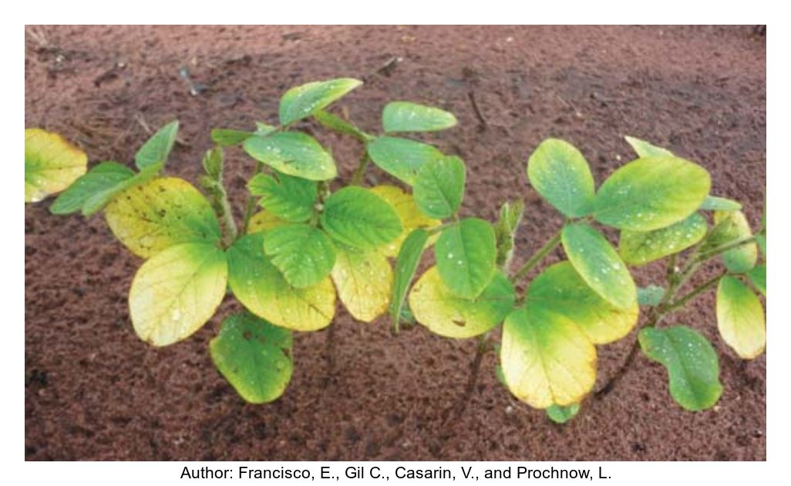
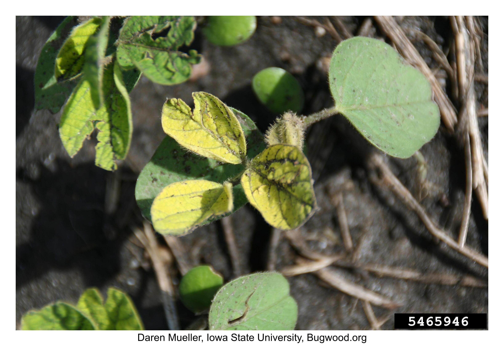

Abiotic
Agronomic
Foliar fertilizer injury
| Category | Agronomic |
| Name | Foliar fertilizer injury |
| Symptoms | Leaf tissue burnt and white/yellow-orange especially near the tips. Leaves curled. Reduced plant growth and yield, though many fields outgrow injury. Burns may be caused by UAN or urea application. |
| References | https://www.mississippi-crops.com/2014/06/14/diagnosing-nutrient-deficiencies-in-mississippi-soybeans/ Mueller, D., Wise, K., Sisson, A., Smith, D., Sikora, E., Bradley, C., and Roberston, A. 2016. A Farmer’s Guide to Soybean Diseases. The American Phytopathological Society. |


Fungicide injury
| Category | Agronomic |
| Name | Fungicide injury |
| Symptoms | Leaf tissue between veins turns brown and yellow. May be confused with Sudden Death Syndrome. Occurs mostly in the upper canopy (but new leaves, emerged post-application would show no symptoms). |


Growth regulator
| Category | Agronomic |
| Name | Growth regulator |
| Symptoms | Leaves are stippled, with small white dots, turning red or yellow over time. Other virus-like symptoms with mottling/cupping. |
Herbicide injury
| Category | Agronomic |
| Name | Herbicide injury |
| Symptoms | Herbicide injury symptoms vary depending on the type of herbicide or surfactant used. PPO inhibitor herbicides: Leaf spots and leaf blights that often mimic diseases. Glufosinate: Interveinal chlorosis, looks similar to sudden death syndrome. ACCase inhibitors: injury along leaf veins. Residual herbicides: Early season can resemble seedling blight. |


Environmental
Drought
| Category | Environmental |
| Name | Drought |
| Symptoms | Leaves wilt and there is stunted/reduced plant growth. There is an increase in pod an flower abortion, thus reducing yield. Symptoms are similar to that of soybean cyst nematode. |
| References | Mueller, D., Wise, K., Sisson, A., Smith, D., Sikora, E., Bradley, C., and Roberston, A. 2016. A Farmer’s Guide to Soybean Diseases. The American Phytopathological Society. |
Flooding
| Category | Environmental |
| Name | Flooding |
| Symptoms | Plants may become stunted and and yellow. Plants may die, especially during V1-V2 and R1-R3. There may be an increase in root rot diseases. |
| References | Mueller, D., Wise, K., Sisson, A., Smith, D., Sikora, E., Bradley, C., and Roberston, A. 2016. A Farmer’s Guide to Soybean Diseases. The American Phytopathological Society. |
Frost
| Category | Environmental |
| Name | Frost |
| Symptoms | Early season: Seedlings appear damaged or killed, brown and necrotic. Water-soaked lesions and discolored hypocotyls indicate plant death. Similar looking to seedling blight. Late season: Plants appear wilted and are completely frozen. Leaflets appear die and may fall off prematurely. Yield is reduced by smaller seed size and harvest of immature/green seed. May be confused with several diseases where leaves remain attached with wilting. |
| References | Mueller, D., Wise, K., Sisson, A., Smith, D., Sikora, E., Bradley, C., and Roberston, A. 2016. A Farmer’s Guide to Soybean Diseases. The American Phytopathological Society. |
Hail
| Category | Environmental |
| Name | Hail |
| Symptoms | Hail tatters leaves and causes bruises or break stems. May lead to plant lodging later in the season. Yield loss may occur depending on the timing of the hail event (R1-R8 are greatest losses). Hail damage may allow for pathogens a point of entry into the plant. |
| References | Mueller, D., Wise, K., Sisson, A., Smith, D., Sikora, E., Bradley, C., and Roberston, A. 2016. A Farmer’s Guide to Soybean Diseases. The American Phytopathological Society. |
Lightning
| Category | Environmental |
| Name | Lightning |
| Symptoms | Circular patch of dead plants with clear edges. Plants in the center will be dead, with less damage as you move to the edge. Damage may be up to 30 feet (9 m) in diameter. Weeds in the area will also be killed. |
| References | Mueller, D., Wise, K., Sisson, A., Smith, D., Sikora, E., Bradley, C., and Roberston, A. 2016. A Farmer’s Guide to Soybean Diseases. The American Phytopathological Society. |

Lodging
| Category | Environmental |
| Name | Lodging |
| Symptoms | Excessive vegetative growth leads to plants falling over. Lodging reduces light penetration in the canopy. Lodging during R3-R5 growth stage is most detrimental and impacts yield by reducing harvestability. |
| References | https://www.ilsoyadvisor.com/on-farm/ilsoyadvisor/agronomy-how-manage-lodging-risk |
Soil Crusting
| Category | Environmental |
| Name | Soil Crusting |
| Symptoms | Soil crusting may occur after a hard rainfall. Soil crusting causes bent, twisted, or death to seedlings. Similar looking to some seedling diseases and herbicide injury. |
| References | Mueller, D., Wise, K., Sisson, A., Smith, D., Sikora, E., Bradley, C., and Roberston, A. 2016. A Farmer’s Guide to Soybean Diseases. The American Phytopathological Society. |


Sunscald
| Category | Environmental |
| Name | Sunscald |
| Symptoms | Leaves in the uppermost canopy turn brown-tan on the underside. May be confused with symptoms of Cercospora leaf blight. |
| References | Mueller, D., Wise, K., Sisson, A., Smith, D., Sikora, E., Bradley, C., and Roberston, A. 2016. A Farmer’s Guide to Soybean Diseases. The American Phytopathological Society. |
Nutrient Disorders
Iron
| Category | Nutrient Disorders |
| Name | Iron |
| Symptoms | Occurs mostly on soils that contain lime, are calcareous with high pH. Also casued by inability for plants to uptake iron. Youngest leavesshow interveinal chlorosis, yellowing between green veins. Plant growth may be stunted. Similar to manganese deficiency and SCN damage. |
| References | https://cropwatch.unl.edu/soils/soybean-nutrients https://www.mississippi-crops.com/2014/06/14/diagnosing-nutrient-deficiencies-in-mississippi-soybeans/ |

Magnesium
| Category | Nutrient Disorders |
| Name | Magnesium |
| Symptoms | Pale green plants with interveinal pale mottling (yellow). Necrosis begins on the underside of leaves. Symptoms appear first on older, fully expanded leaves. |
| References | https://cropwatch.unl.edu/soils/soybean-nutrients |
Manganese
| Category | Nutrient Disorders |
| Name | Manganese |
| Symptoms | Leaves are pale yellow with chlorotic interveinal tissue. Necrosis in interveins over time. Plants look pale green-yellow, with some brown necrosis. |
| References | https://cropwatch.unl.edu/soils/soybean-nutrients https://www.mississippi-crops.com/2014/06/14/diagnosing-nutrient-deficiencies-in-mississippi-soybeans/ |
Nitrogen
| Category | Nutrient Disorders |
| Name | Nitrogen |
| Symptoms | Leaves pale green-yellow and maybe brown in older leaves. Symptoms appear first on older, fully expanded leaves. May be related to poor soybean nodulation. |
| References | https://cropwatch.unl.edu/soils/soybean-nutrients |

Phosphorus
| Category | Nutrient Disorders |
| Name | Phosphorus |
| Symptoms | Spindly appearance with small, rounded leaflets and stunted growth. In some cases P deficient beans appear dark green-blue. Not easily identifiable without leaf tissue testing. |
| References | https://www.mississippi-crops.com/2014/06/14/diagnosing-nutrient-deficiencies-in-mississippi-soybeans/ |
Potassium
| Category | Nutrient Disorders |
| Name | Potassium |
| Symptoms | Green leaves with chlorotic leaf margins and begin to die from the tip. Leaves curl upward and some brown interveinal tissue. Symptoms occur more severely on older leaves, with localized symptoms. Middle to lower canopy, but can occur in upper canopy. Occurs in patches in fields. More prevalent in dry years. |
| References | https://cropwatch.unl.edu/soils/soybean-nutrients https://www.mississippi-crops.com/2014/06/14/diagnosing-nutrient-deficiencies-in-mississippi-soybeans/ |

Sulfur
| Category | Nutrient Disorders |
| Name | Sulfur |
| Symptoms | Plants green to yellow with some brown or bronze necrosis. Leaves pale green to yellow with no prominent veins or necrosis. |
| References | https://cropwatch.unl.edu/soils/soybean-nutrientshttps://www.mississippi-crops.com/2014/06/14/diagnosing-nutrient-deficiencies-in-mississippi-soybeans/ |
Zinc
| Category | Nutrient Disorders |
| Name | Zinc |
| Symptoms | Pale green plants with interveinal mottling and necrosis. Dark green veins. Symptoms first in older, fully expanded leaves. |
| References | https://cropwatch.unl.edu/soils/soybean-nutrients |

Unknown
Green soybean syndrome
| Category | Unknown |
| Name | Green soybean syndrome |
| Symptoms | All parts of the plant (pods, leaves, stems, etc.) remain green and show delayed maturity. Buds may proliferate. Seeds often remain green and swollen, with reduced pod and seed numbers. May cause yield loss depending on the tiing of the infection. May be caused by pesticide applications or artificial lighting. |
| References | https://soybeanresearchinfo.com/soybean-disease/green-stem-disorder/ Harbach, C. J., Allen, T. W., Bowen, C. R., Davis, J. A., Hill, C. B., Leitman, M., … & Hartman, G. L. (2016). Delayed senescence in soybean: Terminology, research update, and survey results from growers. Plant Health Progress, 17(2), 76-83. |


Green stem disorder
| Category | Unknown |
| Name | Green stem disorder |
| Symptoms | Plants have green, fleshy stems and pods at the time of crop maturity. Non-senescent stems with dehisced petioles and normal mature pods. Individual plants and patches of plants may be affected. May be caused by stink bugs feeding, fungicide appl, viruses, or late emergence. |
| References | https://soybeanresearchinfo.com/soybean-disease/green-stem-disorder/ Harbach, C. J., Allen, T. W., Bowen, C. R., Davis, J. A., Hill, C. B., Leitman, M., … & Hartman, G. L. (2016). Delayed senescence in soybean: Terminology, research update, and survey results from growers. Plant Health Progress, 17(2), 76-83. |